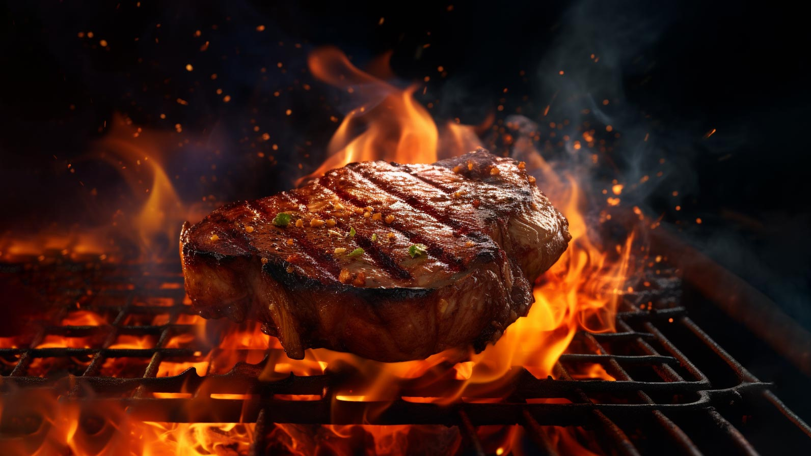

Nuestra Historia
Fundado en 1997 por la célebre chef ficticia Sofía Marín, "La Esquina" comenzó como un pequeño sueño en el corazón de Ciudad Sabores. Inspirado en los sabores tradicionales de la región y fusionándolos con técnicas modernas, el restaurante rápidamente se convirtió en un referente culinario en el país.
Con su decoración acogedora y rústica, el restaurante transporta a los comensales a un mundo donde la tradición y la innovación se encuentran.